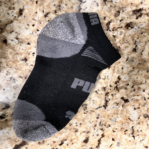
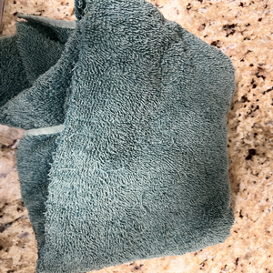
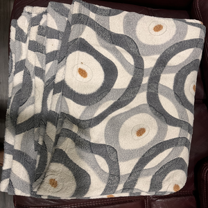
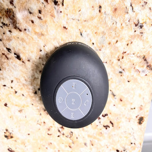
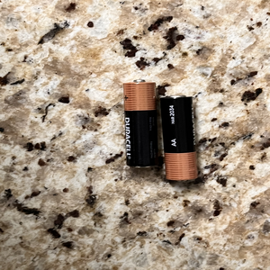
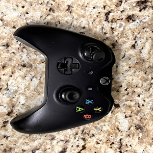
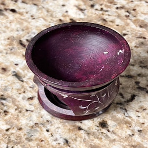
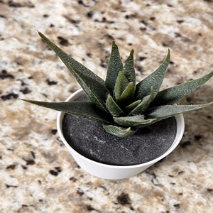
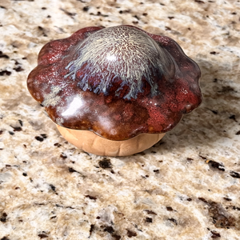

Overview
Hello everyone, Welcome back to my weekly trash of the week blog. This week I have some very important things to share with you. These items have been very useful to me and that is why I do this blog anyways. I do this because I want to keep track of all the things that have helped me in one way or another. By keeping track of these things I can come back later to visit what I have been doing for each week.
Electronic Items
The first category is the most important one and it is electronics. The first item is a speaker which does not work anymore. The speaker looks like a round item with a sucction cup on the bottom to stick to any surface. I got this on thanksgiving like 2 years ago because it was on a sale. This speaker was great and I had some good times listening to music on it. Unfortunately I have to throw it away now because it does not work. The second item in this group are batteries. I got these batteries for common use electronics at home. I got these about three weeks ago. The reason I had to throw them away is obviously because they ran out of charge. The third and most important item on this list for me is the controller. This item is important because I had been using this controller ever since I got the xbox which was about five years ago. I have many memories with this controller because of fun gaming sessions. The reason I have to throw it away is because the controller does not turn on anymore.
Cloth Items
This is the second category which is cloth items. The items in this are socks, a wiping towel, and throw/blanket. The first item is socks which I got about 2 months ago. The reason I had to throw them away was because they got ripped. The second item is a wiping towel which I used around the house. It was very useful for cleaning things. I bought this item around a year ago and have to throw it away because it got too dirty and I have to get a new one. The third item is a blanket which also got too dirty and old. I bought it like 2 years ago and it was useful.
Home Decor Items
This is the third category which is home decor items. The items in this category are a candle holder, an artificial plant, and a glass mushroom. The first item is a candle holder which I got about 2 months ago. The reason I had to replace it was because it got broken. The second item is an artificial plant which I had in my living room. It was very useful for adding some greenery to the space. I bought this item around a year ago and had to replace it because it had faded and lost its color. The third item is a glass mushroom which I had on my bookshelf. I bought it like 2 years ago and it was a unique and interesting addition to my home decor. However, over time it got dusty and didn't look as nice, so I had to replace it.
Gallery
        Item Data
| Item | Weight | Location | Cost | Owned | Mode |
|---|---|---|---|---|---|
| Speaker | 1 lb | Work table | $20 | 2 years | waste facility |
| batteries | less than 1 lb | NA | $5 | 3 weeks | waste facility |
| Controller | 2 lb | Near TV | $150 | 5 years | waste facility |
| socks | less than 1 lb | closet | $30 | 2 months | trash |
| towel | less than 1 lb | kitchen | $25 | 1 year | trash |
| blanket | less than 1 lb | bedroom | $45 | 2 year | trash |
| Candle holder | less than 1 lb | living room | $10 | 2 months | recycle |
| plant | less than 1 lb | living room | $5 | 1 year | trash |
| mushroom | less than 1 lb | book shelf | $5 | 2 year | recycle |
Coda
Alright folks, another week down and it's time to wrap up my weekly "Trash of the Week" blog. Next week, I'll be digging deeper into my trash and sharing some of the ways I'm working to reduce my waste, like using reusable bags and containers, and recycling more. I want to thank all of my readers for following my journey and for supporting my mission of becoming more conscious of my trash footprint. Let's all strive to make a positive impact on the environment by reducing the amount of trash we produce. Thanks for reading and see you next week!
back to topAbout the Author

I am a college student that is recording my trash output. I do this to make sure that I am doing my best to protect the enviroment.
back to top